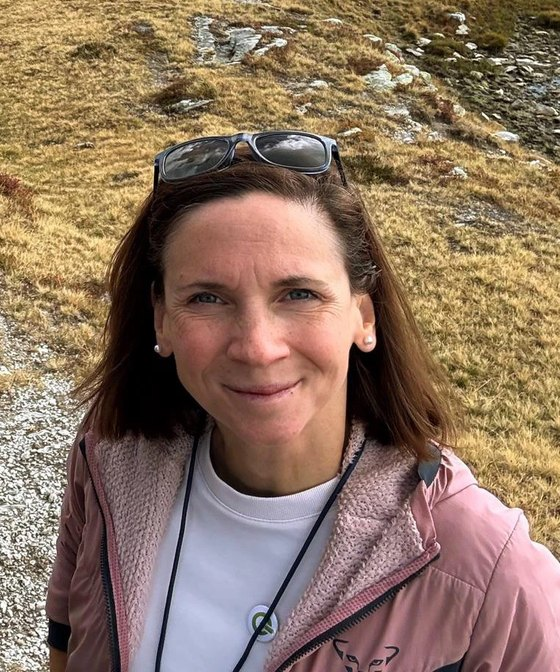

Novinka · november 2026
Slovensko má zastúpenie v riadiacom výbore projektu QGIS
Predsedníčka QGIS Slovensko Jana Michalková bola zvolená za členku QGIS Project Steering Committee (PSC), výboru, ktorý sa podieľa na strategickom smerovaní medzinárodného projektu QGIS.
Pre slovenskú komunitu to znamená priamejšiu cestu ku globálnemu projektu. V PSC sa chce venovať prepájaniu lokálnych skupín používateľov, obojsmernej komunikácii medzi nimi a projektom, vzdelávaniu a netechnickým formám prispievania.
Oficiálne oznámenie QGIS.org doplníme po jeho zverejnení.
